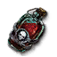

Decoctions
-  Necrophage
Restores 10% of missing vitality regardless of vitality level.
- Ogroid
Prevents Poise-Break and increases stagger resist
- Cursed
More buffs at night, and during a full moon will revive you at 50% health
- Elemental
Reduces enemy elemental resistances when hit by elemental damage
- Spectre
Increases physical resistance and grants graze damage immunity
- Relict
Increases physical resistance and grants graze damage immunity
- Insectoid
Allows you to substitute vigor and stamina for each other when calculating penalties
- Hybrid
Reduces your toxicity by 1 when applying poison to enemies.
Last modified: 26 March 2024